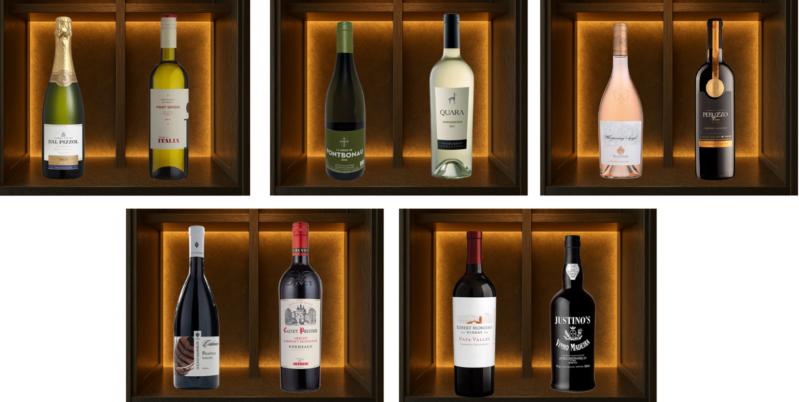

Sobre Vinhos
O vinho é uma bebida que a qualidade pode ser afetada pelo ambiente onde é armazenado e produzido. A temperatura e a umidade são fatores muito importantes para sua preservação e qualidade.
Temperatura Ideal para Vinhos
A temperatura ideal é essencial para preservação e a qualidade do vinho ao longo do tempo. Se for muito alta, acelera o envelhecimento e pode modificar o sabor. Se for muito baixa, pode modificar sua consistência; por isso, manter a temperatura ideal garante que o vinho tenha qualidade e mantenha suas características.

Umidade Ideal para Vinhos
A umidade ideal é essencial para a preservação do vinho e de sua embalagem. Se for muito baixa, a rolha pode ressecar, permitindo a entrada de ar e comprometendo a qualidade da bebida. Já se for muito alta, pode causar mofo e danificar os rótulos. Manter a umidade ideal é indicado para qualidade de converservação e evolução do vinho.
45% a 60%
Riscos ao não controlar a umidade e temperatura
A falta de controle da temperatura e da umidade pode comprometer em diversos fatores como a qualidade do vinho e amadurecimento. Entre os principais riscos estão alterações no sabor e aroma, amadurecimento precoce e mudanças na textura devido a alternâncias inadequadas na temperatura. Além disso, pela umidade pode causar oxidação, proliferação de mofo e até reduzir a validade do liquido. Com isso, o vinho perde suas características essenciais e também seu valor, tornando-se muitas das vezes inapropriado para consumo.
.png)
Na LOFHEL, acreditamos que um grande vinho merece um armazenamento perfeito. Tecnologia precisa, paixão inigualável.


© 2025 Lofhel. Todos os direitos reservados.